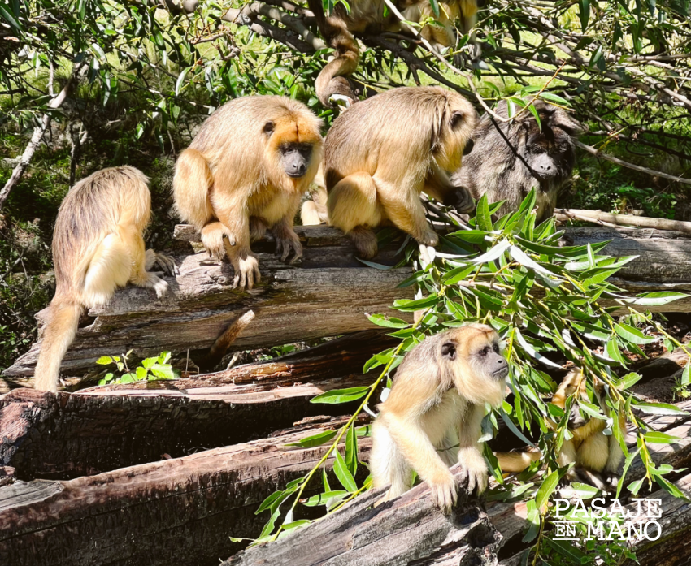
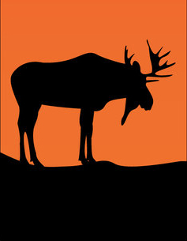

Clasificación de monos
Las diferentes especies de MONO-RROSCOSAS que encontramos las podemos visualizar:
Donde encontrar Proyecto Carayá
Las diferentes especies de MONO-RROSCOSAS que encontramos las podemos visualizar en este vídeo:


¿QUÉ ES UN MONO DE LAS CUMBRES?
Hace referencia a los primates del Proyecto Carayá, el primer y único centro de rehabilitación de primates de Argentina, ubicado a solo 11 km de La Cumbre en la provincia de Córdoba. Alberga más de 300 animales, principalmente monos carayá (aulladores) y capuchinos rescatados del tráfico ilegal.
Las diferentes especies de MONO-RROSCOSAS que encontramos las podemos visualizar:
Las diferentes especies de MONO-RROSCOSAS que encontramos las podemos visualizar en este vídeo:
